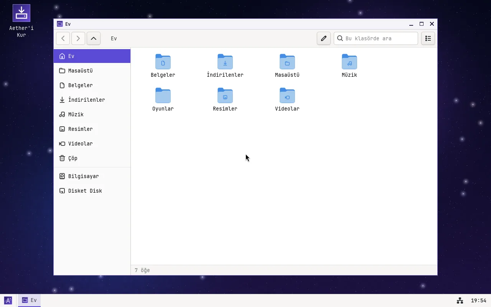
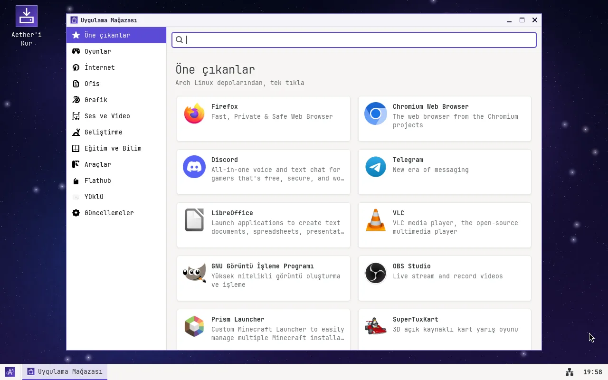
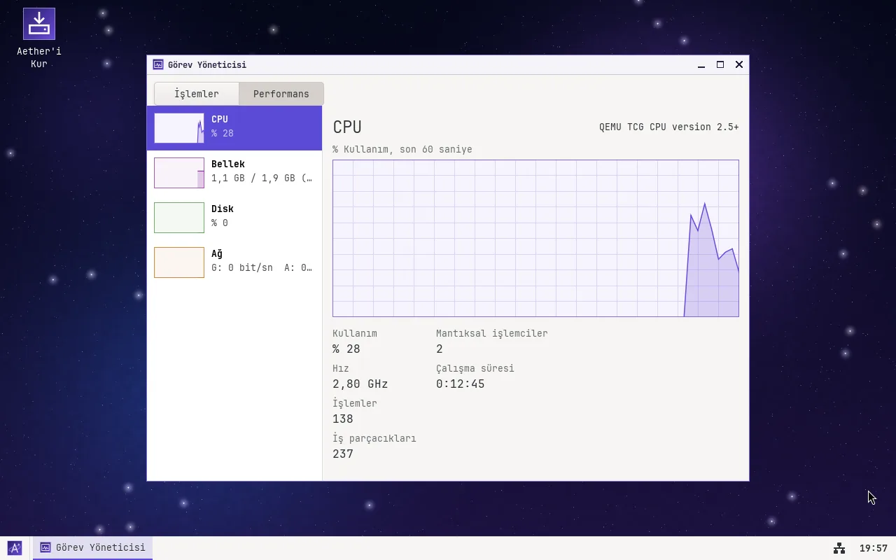
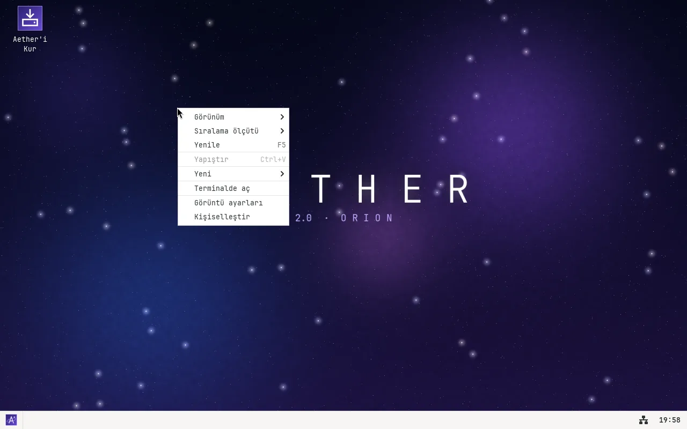

AETHER
Hi, I'm Hot Zot. Aether is a small Linux distribution I made purely out of curiosity. I wanted to see what goes on inside an operating system; then it grew into something with its own installer, its own settings app and even its own web browser.
Since version 2.0 it's built on Arch Linux, and the ISO is around 800 MB. It loads into RAM at boot, and if you like it you can install it to disk (alongside Windows, if you want). The App Store installs apps from the Arch repositories and Flathub in one click. The interface is in Turkish and English (pick English in the boot menu).


Download
Current version: 2.0 "Orion" (9 October 2026). If you want something lighter, the Alpine-based 1.1 "Nebula" is still available.
| file | size | what |
|---|---|---|
| aether-2.0-orion.iso sha256: 1d5cd5a4cdbb0524d3dde89f4c6d397fb06f65e2c15a6b12d1f4a84f070a17bd | 798 MB | 2.0, the operating system, x86_64, BIOS + UEFI |
| aether-1.1-nebula.iso sha256: b7f82d963c78a9e3547463438df34c16fb24ee85f16842e20599a84706650dfa | 485 MB | 1.1, Alpine-based, lighter; no app store |
| Eclipse-Windows.zip sha256: 4d2270a6167e861c8e8ca14c2fbdd2f535d514414b7749238180bb74ba35c0f3 | 575 KB | the Eclipse browser for Windows 10/11 |
To check that the download isn't corrupted:
sha256sum aether-2.0-orion.iso # Linux certutil -hashfile aether-2.0-orion.iso SHA256 # Windows
Aether is open source. All the code is at github.com/1260120047-eng/aether-os under the GPL-3.0 license, along with instructions for building it. The 1.1 code is on the 1.1 branch.
All files are on the GitHub releases page.
What's inside
- Arch Linux base with a current Linux kernel. Anything in the Arch repositories can be installed with
sudo pacman -S - App Store: the Arch repositories and Flathub in one place; Firefox, Discord, Steam, Prism Launcher, LibreOffice, OBS... in one click
- Aether Files: my own file manager, with copy progress, a trash can and drag and drop
- Task Manager (Ctrl+Shift+Esc): processes plus CPU, memory, disk and network graphs
- Game Mode: Steam and the graphics driver in one click, and a performance mode
- Yörünge, a window manager I wrote myself: taskbar, desktop icons, Windows-style right-click menus, light and dark themes
- An installer I wrote myself: language, keyboard, user, disk. It can also install alongside Windows
- Wi-Fi, sound, notifications, and a Drivers page in Settings
- Eclipse: my own WebKit-based browser, with tabs, bookmarks, history, private windows and an ad blocker
- My own terminal (with tabs), text editor, image viewer, calculator, Minesweeper, a starfield screensaver
- 3D acceleration in virtual machines (VirtualBox, VMware, QEMU), and the resolution follows the window size
gccandmakecome preinstalled.aether-infoandaether-guncelle(update) in the terminal







The screenshots show the Turkish interface.
Installing
I've tested it in VirtualBox and QEMU, where it works fine. I haven't tried it on a real computer yet (see below).
- Create a new VirtualBox machine. Type: Linux, version: Arch Linux (64-bit).
- Give it at least 2 GB of RAM (3 GB is more comfortable) and a 10 GB disk.
- Optionally, in Settings → Display, set the graphics controller to VMSVGA, tick Enable 3D Acceleration and raise video memory to 128 MB.
- In Settings → Storage, attach the ISO to the CD drive and start the machine.
- In the boot menu, choose English. It logs into a live session with no password. Try it as long as you like, then click Install to Disk in the welcome window (or the install icon on the desktop).
- When the install finishes, remove the ISO, restart and log in with your own account.
To install alongside Windows on a real computer: back up your important files first, turn off Fast Startup and BitLocker in Windows, and turn off Secure Boot in your BIOS/UEFI settings. Then choose to install alongside Windows in the installer and pick how much space Aether gets; at boot, a menu lets you choose between Aether and Windows.
Known issues
- Not tested on real hardware; I could only try it in virtual machines. If you try it, I'd love to hear how it went.
- Secure Boot isn't supported, so you need to turn it off.
- If the screen stays black, choose Safe graphics in the boot menu, or turn off 3D acceleration in VirtualBox.
- If VirtualBox shows a turtle icon at the bottom, Hyper-V is enabled on Windows and everything will be very slow.
- 64-bit only.
Release notes
- 2.0 "Orion" · 9 October 2026
- Moved to an Arch Linux base. App Store (Arch repositories and Flathub), Aether Files, Task Manager, Game Mode, desktop icons and right-click menus, installed apps in the start menu, installing alongside Windows,
sudo, 3D acceleration in virtual machines, and windows that adapt when the resolution changes. - 1.1 "Nebula" · 8 October 2026
- Openbox is gone; my own window manager Yörünge and a taskbar replace it. Notifications, Wi-Fi settings, a Drivers page, an ad blocker in Eclipse, my own terminal, 6 new wallpapers. Boot is more than twice as fast.
- 1.0 "Nebula" · 7 October 2026
- First release. NetSurf was removed and replaced with Eclipse. Fixed the black screen in VirtualBox.
What's next
I want to bring my own game engine's map editor to Aether. That will most likely be in the next version.
Comments
If you've tried it, tell me what you think: what you liked, what's broken, what you'd like added. You need a GitHub account to comment. Comments also appear on the Discussions page, and you're welcome to write in English.
Last updated: 9 October 2026